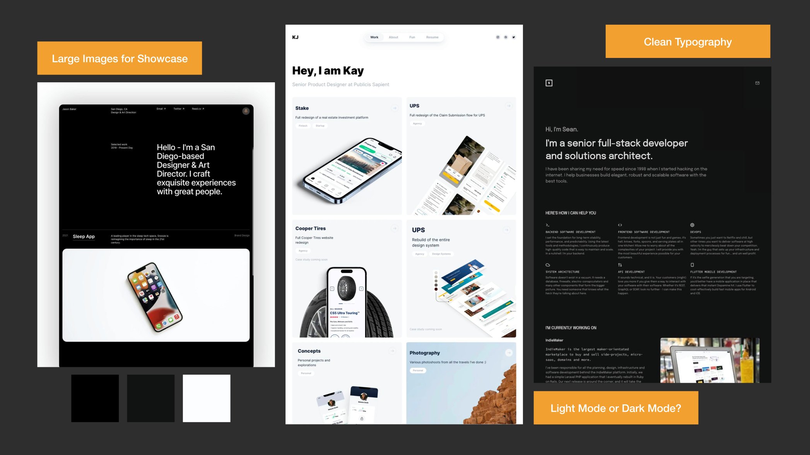
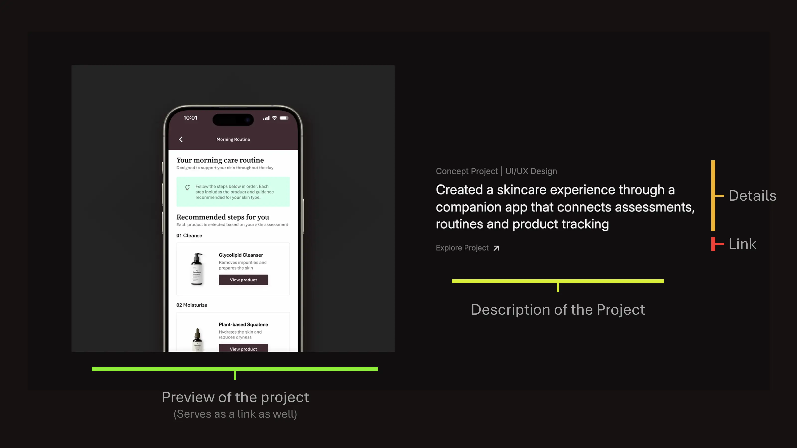
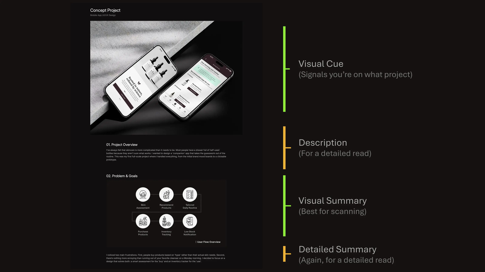
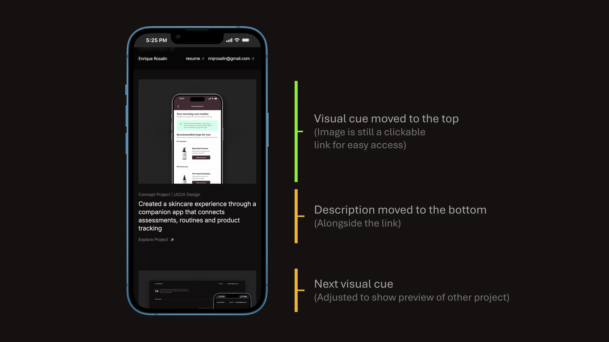
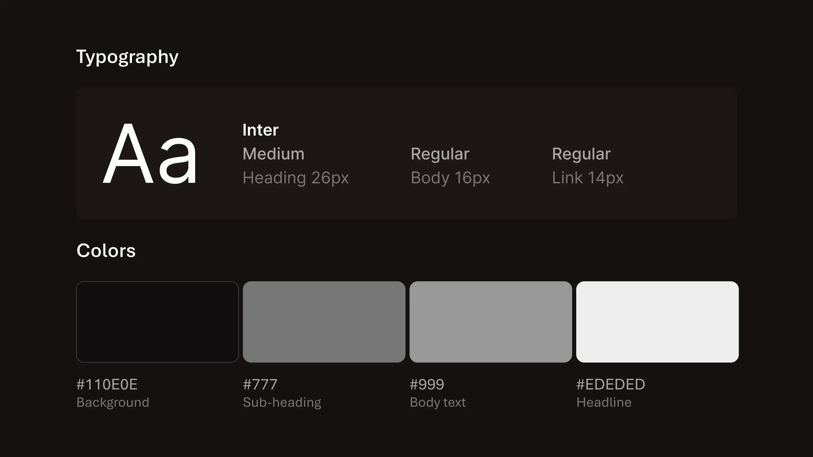
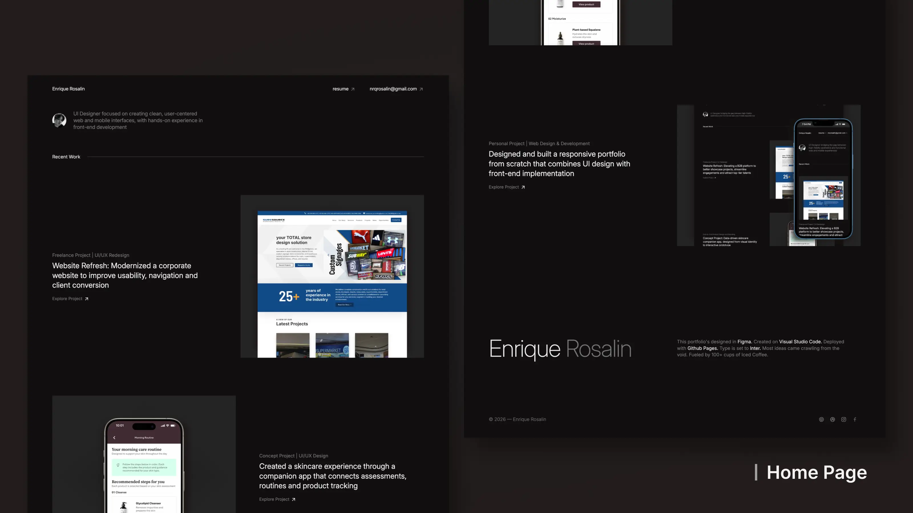
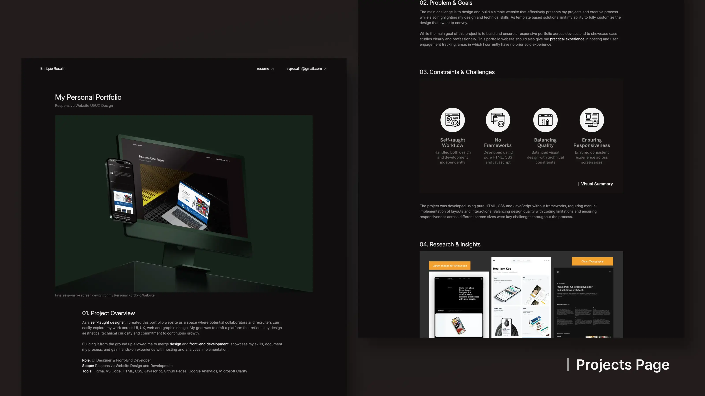
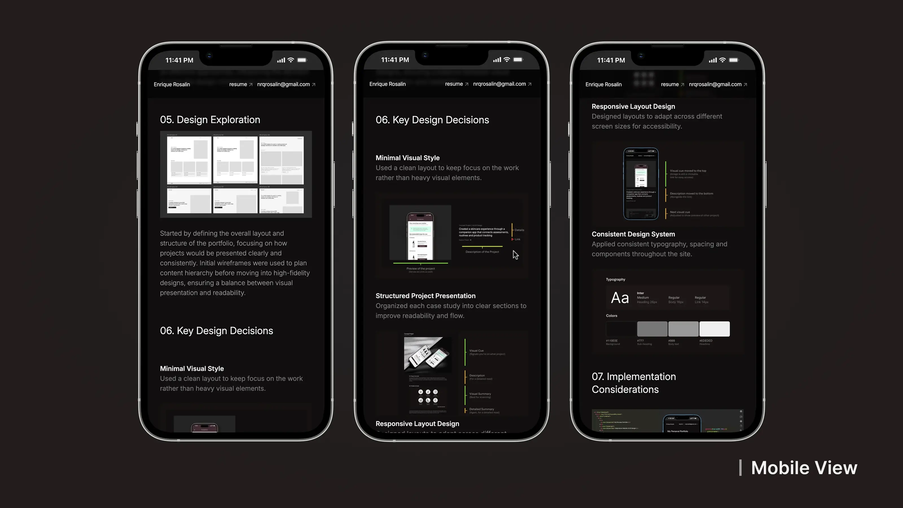

My Personal Portfolio
Responsive Website UI/UX Design

01. Project Overview
As a self-taught designer, I created this portfolio website as a
space where potential collaborators
and recruiters can
easily explore my work across UI, UX, web and graphic design. My goal was to craft a platform
that
reflects my design
aesthetics, technical curiosity and commitment to continuous growth.
Building it from the ground up
allowed me to merge
design and front-end development,
showcase my skills, document my process, and gain hands-on
experience with hosting and
analytics implementation.
- Role: UI Designer & Front-End Developer
- Scope: Responsive Website Design and Development
- Tools: Figma, VS Code, HTML, CSS, Javascript, Github Pages, Google Analytics, Microsoft Clarity
02. Problem & Goals
The main challenge is to design and build a simple website that effectively presents my
projects
and creative process while also highlighting my design and technical skills. As template based
solutions limit my ability to fully customize the design that I want to convey.
While the main goal of this project is to build and ensure a responsive portfolio across devices
and to showcase case studies clearly and professionally. This portfolio website should also give
me practical
experience in hosting and user engagement tracking, areas in which I currently
have
no prior
solo
experience.
03. Constraints & Challenges

The project was developed using pure HTML, CSS and JavaScript without frameworks, requiring manual implementation of layouts and interactions. Balancing design quality with coding limitations and ensuring responsiveness across different screen sizes were key challenges throughout the process.
04. Research & Insights

I spent some time browsing portfolios of designers in different industries through Pinterest and Dribbble. I noticed they all had one thing in common: they didn't just show the 'pretty' final results, they told a story. Clear hierarchy, simple navigation and focused project sections stood out as effective approaches, influencing the decision to keep the design minimal and content-driven.
05. Design Exploration

Started by defining the overall layout and structure of the portfolio, focusing on how projects would be presented clearly and consistently. Initial wireframes were used to plan content hierarchy before moving into high-fidelity designs, ensuring a balance between visual presentation and readability.
06. Key Design Decisions
-
Minimal Visual Style
Used a clean layout to keep focus on the work rather than heavy visual elements. -
Structured Project Presentation
Organized each case study into clear sections to improve readability and flow. -
Responsive Layout Design
Designed layouts to adapt across different screen sizes for accessibility. -
Consistent Design System
Applied consistent typography, spacing and components throughout the site.




07. Implementation Considerations

I hand-coded the website with HTML, CSS and some basic JavaScript using VSCode. I structured my CSS with clear sections for layout, typography and color variables to keep it scalable and systemized. Version control was managed using GitHub and the site was deployed through GitHub Pages. Basic analytics tools such as Google Analytics and Microsoft Clarity were integrated to explore user behavior through metrics, heatmaps and session recordings.
08. Final Design

The final website presents projects in a clear and structured layout, focusing on readability and ease of navigation. A consistent visual system was applied across pages, while responsive design ensures the site adapts smoothly across desktop and mobile devices.


09. Outcome

The portfolio was successfully deployed using GitHub Pages and serves as a platform to showcase projects and case studies. The project also provided hands-on experience in translating design into code, managing responsiveness and integrating basic analytics tools for user behavior tracking.
10. Learnings
-
Bridging Design and Development
Gained a better understanding of how design decisions impact front-end implementation. -
Responsiveness Requires Planning
Learned the importance of structuring layouts early to support different screen sizes. -
Consistency Through Systems
Applying consistent styles and components improved both design quality and development efficiency.
Other Works

Freelance Project | UI/UX Redesign
Website Refresh: Modernized a corporate website to improve usability, navigation and client conversion
Explore Project
Concept Project | UI/UX Design
Created a skincare experience through a companion app that connects assessments, routines and product tracking
Explore Project